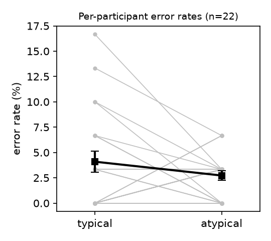

Question. After reading a word for an object with a typical location (e.g., hat: up; boot: down), do people make more errors identifying a briefly shown letter (X/O) when it appears at the word's typical location than at the opposite location?
Data and sample. Replication data (d02.sav): 22 participants × 60 experimental trials = 1,320 trials, 30 typical and 30 atypical trials per participant. No participants or trials excluded (as the card prescribes for error rates; no missing values; resp_corr agrees with the Correct string on 100% of trials). Total errors: 45 (27 typical, 18 atypical).
Test (fixed in the log before analysis). Per-participant error rate = proportion of trials with resp_corr = 0, per condition (typisch 1 = typical, 2 = atypical). One-way repeated-measures ANOVA by subjects (F1), typical vs atypical; partial η² = SS_location / (SS_location + SS_error), 95% CI by noncentral-F inversion. The claim holds if typical > atypical with p < .05.
Result.
| Typical | Atypical | |
|---|---|---|
| Mean error rate (SD) | 4.09% (4.82) | 2.73% (2.21) |

Interpretation. The difference is in the predicted direction but small and not distinguishable from zero. Errors are rare (3.4% overall, at most 5 of 30 trials per cell), so the test has little resolution: the interval for the difference runs from about a 1-point advantage for typical to a 3.7-point disadvantage, and the η² interval includes both zero and sizeable effects. The data therefore do not support the claim, without ruling out a modest effect.
Conclusion. The claim does not hold on this data: participants did not make significantly more identification errors at the cue word's typical location than at the atypical location (F(1, 21) = 1.45, p = .24).